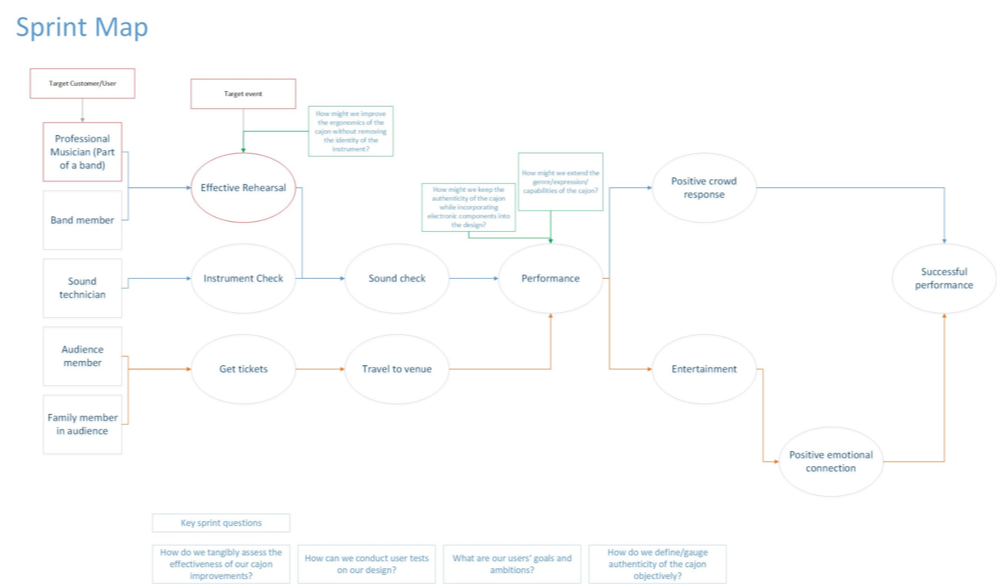
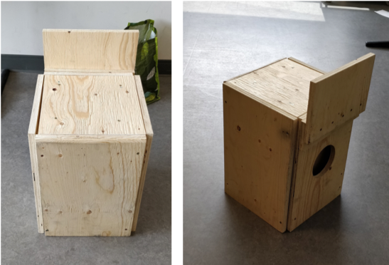
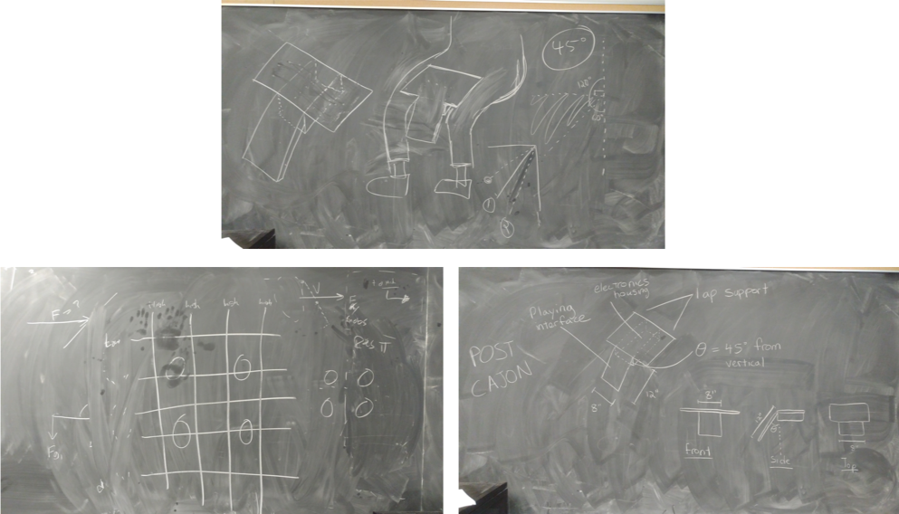
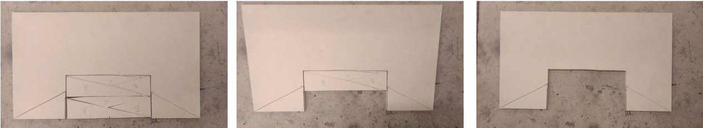
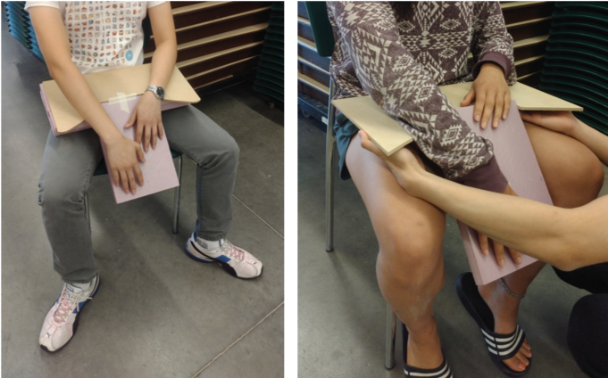
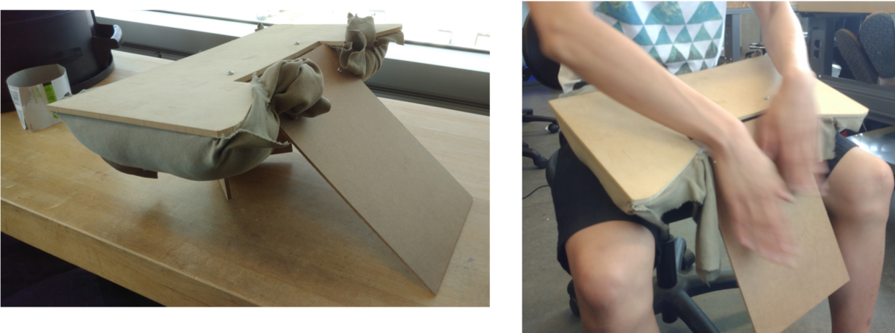

As part of our third year design course, we were to take an existing traditional instrument and improve upon it. In terms of what aspect we were to improve upon, it was up to our research and process, with the one requirement being that the instrument must be augmented digitally in some way. We worked in groups of 6 and used the Google Design Sprint to kickstart our process. Then, we spent the remainder of the term creating prototypes, testing them and modifying them in the iterative design process. My group chose to redesign the cajon. Below are the steps in which we took to complete it.
To choose an instrument, we decided to do some research to see what would be feasible. We voted on all the choices and chose the instrument with the majority of the group agreeing to it. Here is a list of all the final choices we had:
We chose the cajon in the end because it was simple enough to build by the end of the term (~3 months) and there was a lot of freedom for us to improve upon it. We researched on some of the current issues with the instrument:
We came up with a sprint map to map out the problem and find an area to focus on. We learned that there are a plethora of issues associated with the ergonomics of a cajon.
Target Event: Effective Rehearsal
Target User: Professional Musician
How might we improve the ergonomics of the cajon without removing the identity of the instrument?”
On the second day of the Google Sprint, each member of the group brought research to share with toher members of possible things to include in our solution. We learned that a lot of products that involve physical user interactions haves similar ergonomic issues. Thus, we could draw parallels by referencing the ergonomic improvements of chairs, wrist-guards, etc... to get an idea of how the ergonomics of the cajon could be improved.
Then we drew possible solutions based on our research. The following components/enhancements were chosen (through a heat mapping exercise) for our low fidelity prototype (LFP):
Our low fidelity prototype:
Concurrently, we also performed user interviews with casual cajon players as well as a professor from Wilfred Laurier University who specializes in creating instruments.
Some insights from the interviews
In addition, we also performed some user-testing with members in our class using our LFP.
As a group, we discussed about the next steps for our MFP and realized that we had to clarify our design scope and focus. We updated our requirements as follows:
Re-clarified Problem Statement: Develop an improved cajon that enhances the ergonomics of the playing experience with respect to posture and strain while increasing the portability and expressibility of the playing experience.
After sketching out our plans, we started working on our MFP in the machine shop. We proposed 3 different cuts to the top surface.
Our first iteration involved foam boards:
We replaced them with cushion after user testing:
Sorry! I'm working hard to finish this portfolio item! If you're interested in this particular project, please email me about it and I can tell you more about it. Until then, please be patient :)
Pocket Zookeeper
tribel